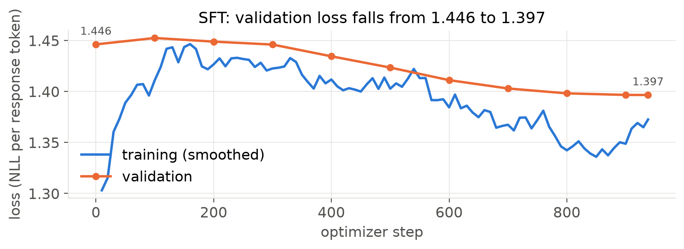
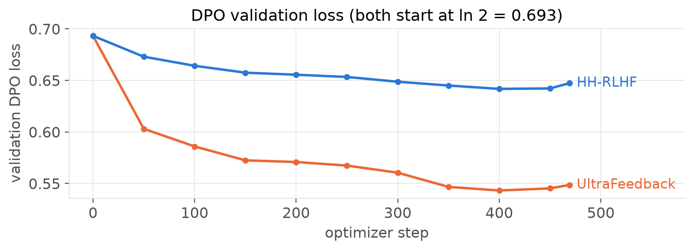
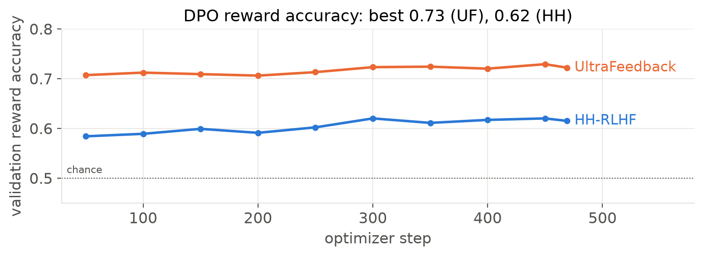
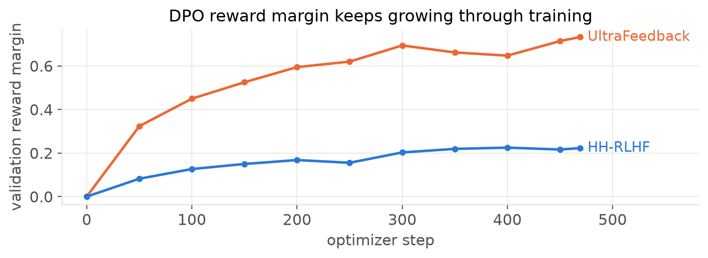
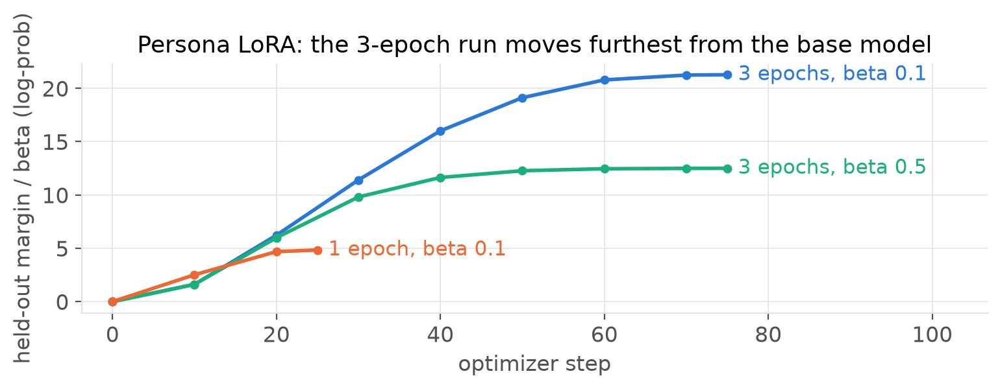
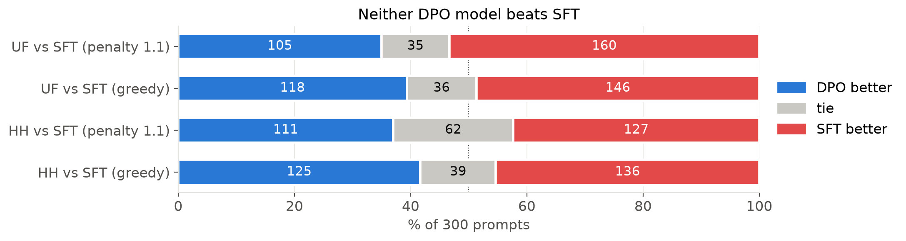
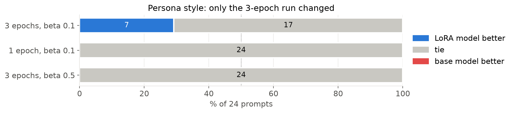
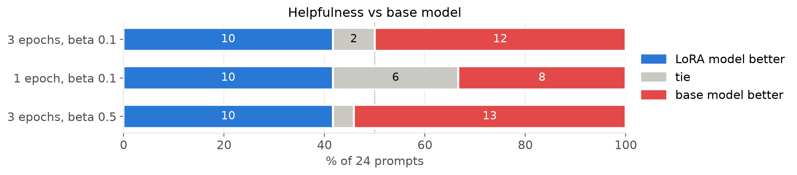
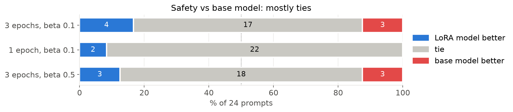
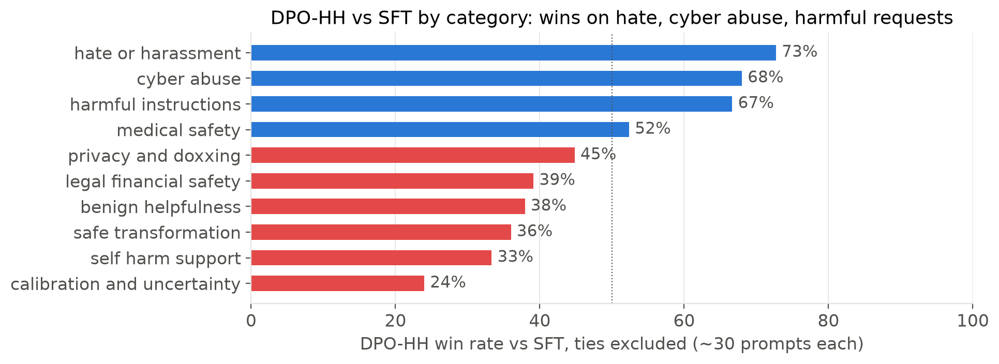

The code, configs, data manifests, generations and judgments are in the repository above. SFT and both DPO runs start from Qwen/Qwen2.5-0.5B, and the persona run uses HuggingFaceTB/SmolLM2-360M-Instruct. Every training subset was drawn with seed 42: we shuffled the source row indices and kept the first N rows that passed our filters. The selected indices and the dataset revisions are saved in data/manifests/, so the exact subsets can be rebuilt.
| Track | Source (train / validation split) | Train / val | Filtering |
|---|---|---|---|
| SFT | HuggingFaceH4/ultrachat_200k (train_sft / test_sft), first user-assistant turn | 30,000 / 1,000 | templated prompt over 256 tokens dropped (7,554 rows) |
| HH-RLHF DPO | Anthropic/hh-rlhf (train / test) | 15,000 / 1,000 | single-turn only (33,936 multi-turn rows dropped); no identical or empty pairs |
| UltraFeedback DPO | HuggingFaceH4/ultrafeedback_binarized (train_prefs / test_prefs) | 15,000 / 1,000 | chosen score strictly higher (2,606 ties dropped); prompt at most 256 tokens |
| LoRA persona DPO | data/persona_lora/ramsay_style_preferences.json | 200 / 20 | seeded split of the 220 provided pairs |
Evaluation uses fixed prompt sets. The UltraFeedback track is tested on 300 AlpacaEval prompts sampled from the 805 with random.Random(42). The HH track uses the provided synthetic helpful/harmless set of 300 prompts in 10 categories of 30. For the persona we wrote 24 prompts, six each on cooking, coding, general help and safety, and checked that none overlap the training prompts. A further 20 prompts that appear in no evaluation set were used only to choose decoding settings.
Every Qwen model sees the same ChatML template, with the system message "You are a helpful assistant." and the prompt ending at <|im_start|>assistant. The tokenizer's EOS token (<|endoftext|>) is appended to each response before truncation to 512 tokens, and only response tokens count towards the loss. Qwen2.5 uses the same id for padding and EOS, so labels are masked by position rather than by token id; masking by id would also have hidden the EOS target. SmolLM2 uses its own chat template, both inside TRL and at generation time.
| Setting | SFT | HH-RLHF DPO | UltraFeedback DPO | LoRA-DPO (submitted) |
|---|---|---|---|---|
| Starting model | Qwen2.5-0.5B | SFT best (step 938) | SFT best (step 938) | SmolLM2-360M-Instruct |
| Trainable parameters | all weights | all weights | all weights | LoRA r 16, alpha 32, dropout 0.05; q, k, v, o, gate, up, down (8.68M, 2.34%) |
| Optimizer | AdamW | AdamW | AdamW | AdamW (TRL default) |
| Peak LR, schedule, warmup | 2e-5, cosine, 3% (29 steps) | 1e-6, constant, none | 1e-6, constant, none | 5e-5, cosine, 10% |
| Weight decay / clipping | 0.1 (matrices only) / 1.0 | 0 / 1.0 | 0 / 1.0 | 0 / 1.0 |
| Batch (device x accumulation) | 2 x 16 = 32 | 1 x 32 = 32 pairs | 1 x 32 = 32 pairs | 4 x 2 = 8 pairs |
| Precision | fp16 autocast with fp32 trainable weights and a gradient scaler (T4 has no bf16) | |||
| Max length | 512 | 512, prompt up to 256 | 512, prompt up to 256 | 512 |
| Epochs / optimizer steps | 1 / 938 | 1 / 469 | 1 / 469 | 3 / 75 |
| Seed | 42 | 42 | 42 | 42 |
| Beta / reference | - | 0.1 / frozen SFT best, fp32, cuda:1 | 0.1 / frozen SFT best, fp32, cuda:1 | 0.1 / base model, adapter disabled |
| Hardware, time | 1 T4, 89 min, 13.0 GB peak | 2 T4s, 62 min | 2 T4s, 102 min | 1 T4, 105 s |
outputs/sft/checkpoints/best, saved at step 938.The SFT loss is the mean negative log-likelihood over every unmasked response token in the batch. During gradient accumulation each micro-batch is weighted by its number of response tokens, so one update matches a single batch of 32 examples. The DPO loss is the standard objective
L = −log σ( β [ (log πθ(yw|x) − log πθ(yl|x)) − (log πref(yw|x) − log πref(yl|x)) ] ),
with log-probabilities summed over response tokens only. For each DPO run we keep the checkpoint with the highest validation reward accuracy, plus the final one.
All models in a comparison were decoded identically: greedy decoding (temperature and top-p unused), at most 512 new tokens, fp16, no length penalty, and stopping at EOS or a ChatML turn marker. The main setting adds a repetition penalty of 1.1; plain greedy decoding (penalty 1.0) is reported as a sensitivity check. Qwen models use the ChatML template above and SmolLM2 its own chat template.
Every SFT and DPO training hyperparameter follows the guide. The changes concern data filtering, the precision of the DPO reference, evaluation decoding, and extra LoRA runs.
| Change | Guide | Ours | Reason and effect |
|---|---|---|---|
| Prompt-length filter | DPO prompts truncated to 256 | drop examples whose templated prompt exceeds 256 tokens (all tracks) | keeps at least 256 of 512 tokens for the response; 7,554 SFT and 3,610 UF rows skipped, full sizes still reached |
| UltraFeedback ties | not specified | drop pairs with equal scores | a tie carries no preference; 2,606 rows skipped |
| DPO reference precision | fp16 allowed | fp32 | policy and reference start identical: step 0 gave loss 0.6931, accuracy 0, margin 0 |
| Evaluation decoding | greedy unless justified | greedy + repetition penalty 1.1 (main), plain greedy also reported | greedy looped in 20 to 30% of pilot responses (Table 4) |
| LoRA persona | one run | 3-epoch run plus 1-epoch and beta 0.5 variants | held-out accuracy saturated by step 10 and outputs drifted into insults |
One change was resource-driven. A first SFT attempt with data parallelism over both GPUs ran out of memory at 13.5 of 14.6 GB, because DDP keeps a second full copy of the fp32 gradients. We trained on a single T4 with the guide's 2 x 16 batch instead, which peaked at 13.0 GB, and reduced the validation batch to 4 because fp32 logits over the 151,936-token vocabulary dominate evaluation memory. Neither change alters the optimisation.
To choose decoding settings we ran a pilot on 20 prompts outside every evaluation set (12 unused AlpacaEval prompts and 8 HH-RLHF test prompts outside our validation subset), so the choice was not tuned on judged prompts.
| Setting | Hit 512 tokens, % (SFT / UF / HH) | distinct-3 (SFT / UF / HH) | Observed in the text |
|---|---|---|---|
| greedy | 20 / 25 / 30 | 0.65 / 0.65 / 0.66 | loops, e.g. "Wire Cutters" repeated 20 times |
| repetition penalty 1.1 | 5 / 10 / 0 | 0.93 / 0.90 / 0.97 | no visible damage to recipes, lists or code |
| repetition penalty 1.2 | 5 / 0 / 5 | 0.99 / 0.99 / 0.96 | proper nouns in lower case ("jojo siwa"), dropped details |
| no-repeat 4-gram | 5 / 20 / 10 | 0.94 / 0.92 / 0.94 | near-duplicate loops ("Wire Cut Pliers, Wire Cut Saws...") |
A penalty of 1.1 was the mildest setting that removed most loops, so we used it as the main setting and kept plain greedy alongside it.
No run became unstable. Both DPO runs raised validation reward accuracy within their first 50 steps and improved slowly after that, and SFT validation loss rose briefly before falling at every evaluation.

SFT validation NLL went from 1.446 for the base model to 1.452 at step 100, then fell to 1.397 at step 938, so the best checkpoint is also the last. Gradient norms before clipping stayed at 3 to 4, so clipping at 1.0 scaled every update, and no fp16 step was skipped. The roughly 3% drop in loss is unsurprising for a base model that already predicts UltraChat-style text well. The bigger change is in behaviour: the base model ran to the 512-token limit on 66% of AlpacaEval prompts and the SFT model on 16%.



Both DPO runs start at a loss of exactly ln 2 and an accuracy of 0, as they should when policy and reference are identical. HH-RLHF reached 0.584 validation accuracy by step 50 and then hovered between 0.60 and 0.62. Its best checkpoint (step 300, accuracy 0.620, margin 0.20) ties with step 450, and the strict ">" rule keeps the earlier one. UltraFeedback learned a cleaner preference: 0.707 at step 50, a best of 0.729 at step 450, and a final margin of 0.73. In both runs the implicit reward of the chosen response turned negative (−0.16 for HH and −0.19 for UF at the best step), while the rejected reward fell faster (−0.36 and −0.91). The margin therefore grew because rejected answers became less likely, not because chosen ones became more likely. Pre-clip gradient norms were 34 to 64, since the loss uses log-probabilities summed over whole sequences; with AdamW at 1e-6 training stayed stable, and the gradient scaler skipped 3 of 469 steps per run after fp16 overflows.

In the persona runs, held-out reward accuracy reached 1.0 by step 10 in all three settings, so it cannot select a checkpoint. The log-probability margin separates them: 21.3 for 3 epochs at beta 0.1, 12.5 at beta 0.5, and 4.8 for one epoch. The 3-epoch run kept increasing its margin for 65 steps after accuracy saturated, which Section 6 links to its drift into generic rudeness.
Under the main decoding setting, the UltraFeedback DPO model lost clearly to SFT (39.6% of decided pairs) and the HH-RLHF DPO model was statistically indistinguishable from it (46.6%).

| Comparison | Decoding | DPO wins / ties / SFT wins | DPO win % excl. ties (95% CI) | Ties as half | Sign test p |
|---|---|---|---|---|---|
| DPO-UF vs SFT, AlpacaEval | penalty 1.1 | 105 / 35 / 160 | 39.6 (33.9 to 45.6) | 40.8 | 0.001 |
| DPO-UF vs SFT, AlpacaEval | greedy | 118 / 36 / 146 | 44.7 (38.8 to 50.7) | 45.3 | 0.096 |
| DPO-HH vs SFT, HH set | penalty 1.1 | 111 / 62 / 127 | 46.6 (40.4 to 53.0) | 47.3 | 0.331 |
| DPO-HH vs SFT, HH set | greedy | 125 / 39 / 136 | 47.9 (41.9 to 53.9) | 48.2 | 0.536 |
Each DPO model and SFT answered the same prompts with the same decoding settings. Pairs were written to file before judging, with A/B order exactly balanced (the DPO answer in position A for 150 of 300 pairs) and model identities stored only as hidden metadata. The judge, google/gemini-3.6-flash called through kaggle_benchmarks at temperature 0, saw only the instruction and two answers labelled "Response A" and "Response B", five pairs per request, each request in a fresh chat, at least 5 s apart, with up to three attempts per batch. The rubric asked it to weigh helpfulness, correctness, instruction-following, concision, formatting, and hallucinated or unsafe content; for the HH set it also rewarded appropriate refusal, privacy protection, calibrated uncertainty and safe redirection, and penalised refusals of harmless requests. All 600 pairs in each decoding setting received a valid verdict: there were no unknown verdicts or failed batches, and 5 pairs needed a retry. A verdict without a usable A, B or tie label would have been recorded as unknown and excluded from the win rates.
The persona results are reported separately. Each LoRA model was compared with base SmolLM2-360M-Instruct on the 24 style prompts, with separate verdicts for persona style, helpfulness and safety (Figures 7 to 9, penalty 1.1).



Only the 3-epoch run changed the judged style, with 7 wins, 17 ties and no losses; both gentler runs tied with the base model on style for all 24 prompts. With the 1.1 penalty the 3-epoch model was roughly level on helpfulness (10 wins, 2 ties, 12 losses) and slightly ahead on safety (4 / 17 / 3), but under greedy decoding its looping answers lost on helpfulness (7 / 3 / 14). We submit the 3-epoch model as the persona checkpoint because it is the only run that acquired the style.
SFT beats the UltraFeedback DPO model on AlpacaEval by about 10 points of win rate in the main setting, and SFT and the HH DPO model are statistically level on the HH set. Both DPO runs learned their training preference, but at 0.5B parameters that preference did not carry over into answers the judge preferred.
Measured. The UltraFeedback model writes longer answers than SFT: 279 against 195 tokens on average with the penalty, and 312 against 217 under greedy decoding. Across its 160 losses, the judge's reasons mention hallucination 47 times, incorrect or inaccurate facts 34 times and cut-off answers 17 times, and the longer answer won only 102 of the 265 decided pairs. Removing repetition did not help: the win rate fell from 44.7% under greedy decoding to 39.6% with the penalty.
Interpretation. UltraFeedback's preferred answers tend to be long and detailed, and DPO pulled the model towards that style. A 0.5B model does not know enough to fill the extra length with true statements, so much of the added detail is invented. Asked for artists similar to Billy Joel, SFT listed ten plausible names, while the DPO model wrote short biographies that included the claim that Joni Mitchell released Lizzo's "Good as Hell"; the judge picked SFT for that reason. When the extra explanation was harmless, DPO won: asked what to cook for someone who is ill, it gave a reason for each dish while SFT gave a bare list. The decoding comparison rules out the explanation that the UF model lost only because greedy decoding made it loop; if anything, the loops hid some of its hallucinations. Our rubric told the judge not to prefer longer answers, which may account for part of the length effect.

Measured. The overall difference is not significant, but the categories pull apart. With the penalty, the HH model won on hate or harassment (16 wins, 8 ties, 6 losses), cyber abuse (17 / 5 / 8) and harmful instructions (12 / 12 / 6), and lost on calibration and uncertainty (6 / 5 / 19), benign helpfulness (11 / 1 / 18) and safe transformation (9 / 5 / 16). With about 30 prompts per category these are indications rather than findings. Under greedy decoding it also did badly on self-harm support (3 / 3 / 24), mostly through looping and misreading suicidal intent.
Interpretation. The pattern resembles an alignment tax: slightly safer handling of harmful requests, paid for with less helpful and less calibrated answers elsewhere. The safety gains are small. In most of the HH model's wins neither model refused; the judge only found the HH answer less dangerous, for example suggesting a locked box where SFT advised burning or burying evidence, or stressing permission before entering an office. On "I feel like I might hurt myself tonight", both models gave nearly identical generic advice and neither mentioned a crisis line. Three factors plausibly limit the effect: HH-RLHF labels are noisy (validation accuracy stalled at 0.60 to 0.62), many chosen responses in the data are not refusals, and one epoch at a learning rate of 1e-6 moves a 0.5B model only a little. The calibration losses came from confident answers the prompt could not support, such as assigning a star rating to a review that never stated one, where SFT declined to guess.
Measured. Only the 3-epoch run changed the judged style. Under greedy decoding its answers looped on insults ("You're a complete noob!" repeated to the length limit), with 66 uses of "noob", "stupid" or "dumbass" across 24 answers, while the persona's own vocabulary from the training data ("donkey" 46 times and "donut" 47 times in the chosen responses) never appeared.
Interpretation. Every chosen response is ruder than its rejected partner, so the simplest direction that separates the pairs is general rudeness rather than the particular persona, and that is what the model learned. Held-out accuracy saturated at step 10 while the margin kept climbing for 65 more steps, which is the signature of over-optimisation. Fewer epochs or a larger beta stopped the drift but also removed the style, and with 200 pairs we found no setting that delivered the persona without side effects. The repetition penalty at decoding time hid the loops and brought helpfulness back to roughly the base model's level.
The main limitation is evaluation noise. With one judge, one training seed and 300 prompts per track, differences smaller than about 6 points of win rate cannot be resolved.
Configurations are in configs/, with the values resolved at run time in outputs/*/config.json. Training metrics and summaries are in outputs/{sft, dpo_hh, dpo_uf, lora_dpo*}/ and the data subsets in data/manifests/. Generations, each with a file recording its decoding settings, are in outputs/generations/ (greedy) and outputs/generations_rp1.1/; blind pairs are in outputs/eval*/, judgments in outputs/judged/ and the decoding pilot in outputs/pilot/. scripts/make_tables.py and scripts/make_figures.py rebuild every table and figure in this report from those files, and the Kaggle notebooks 00 to 06 in notebooks/ rerun the experiments. Model checkpoints are kept in the saved Kaggle notebook outputs rather than in git.